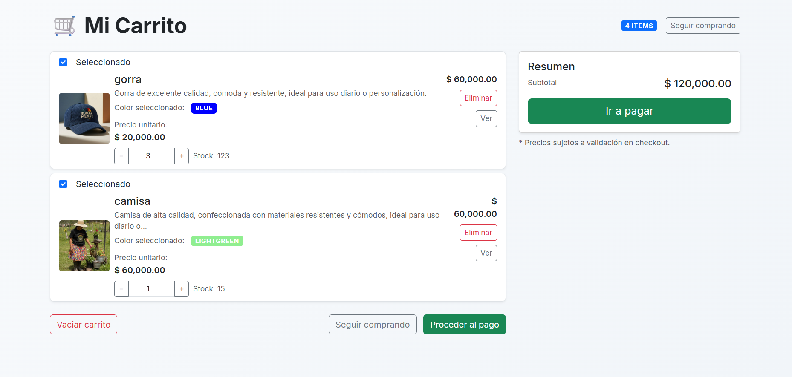
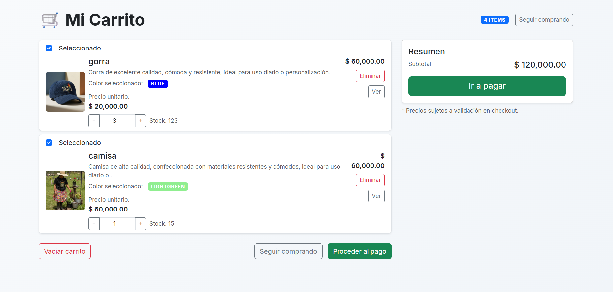

Filtrar proyectos
🛒
Empresa x
E-commerce que se encarga de vender productos campesionos.
📍
Empresa x
Sistema de inventario para una empresa de ganado y cultivos.
🏢
Hotel Master
Sistema completo que se encarga de gestinar todo lo que se requiere en un hotel.
 
